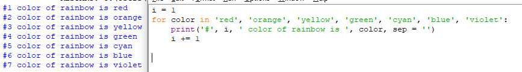

1. Цикл for
Цикл for, также называемый циклом с параметром, в языке Питон богат возможностями. В цикле for указывается переменная и множество значений, по которому будет пробегать переменная. Множество значений может быть задано списком, кортежем, строкой или диапазоном.
Вот простейший пример использования цикла, где в качестве множества значений используется кортеж:

Код 1.1
В этом примере переменная color последовательно принимает значения 'red', 'orange' и т.д. В теле цикла выводится сообщение, которое содержит название цвета, то есть значение переменной color, а также номер итерации цикла число, которое сначала равно 1, а потом увеличивается на один (инструкцией i += 1) с каждым проходом цикла.
Инструкция i += 1 эквивалентна конструкции i = i + 1 (это просто сокращенная запись). Такую сокращенную запись можно использовать для всех арифметических операций: *=, -=, /=, %=...
В списке значений могут быть выражения различных типов, например:

Код 1.2
При первых трех итерациях цикла переменная i будет принимать значение типа int, при последующих трех — типа str.
2. Функция range
Как правило, циклы for используются либо для повторения какой-либо последовательности действий заданное число раз, либо для изменения значения переменной в цикле от некоторого начального значения до некоторого конечного.
Для повторения цикла некоторое заданное число раз n можно использовать цикл for вместе с функцией range:

Код 2.1
В качестве n может использоваться числовая константа, переменная или произвольное арифметическое выражение (например, 2 ** 10). Если значение n равно нулю или отрицательное, то тело цикла не выполнится ни разу.
Функция range может также принимать не один, а два параметра. Вызов range(a, b) означает, что индексная переменная будеть принимать значения от a до b - 1, то есть первый параметр функции range, вызываемой с двумя параметрами, задает начальное значение индексной переменной, а второй параметр — первое значение, которое индексная переменная принимать не будет. Если же a≥b, то цикл не будет выполнен ни разу. Например, для того, чтобы просуммировать значения чисел от 1 до n можно воспользоваться следующей программой:

Код 2.2
В этом примере переменная i принимает значения 1, 2, ..., n, и значение переменной sum последовательно увеличивается на указанные значения.
Наконец, чтобы организовать цикл, в котором индексная переменная будет уменьшаться, необходимо использовать функцию range с тремя параметрами. Первый параметр задает начальное значение индексной переменной, второй параметр — значение, до которого будет изменяться индексная переменная (не включая его!), а третий параметр — величину изменения индексной переменной. Например, сделать цикл по всем нечетным числам от 1 до 99 можно при помощи функции range(1, 100, 2), а сделать цикл по всем числам от 100 до 1 можно при помощи range(100, 0, -1).
Более формально, цикл for i in range(a, b, d) при d > 0 задает значения индексной переменной i = a, i = a + d, i = a + 2 * d и так для всех значений, для которых i < b. Если же d < 0, то переменная цикла принимает все значения i > b.
3. Настройка функции print()
По умолчанию функция print() принимает несколько аргументов, выводит их через пробел, после чего ставит перевод строки. Это поведение можно изменить, используя именованные параметры sep (разделитель) и end (окончание).

Код 3